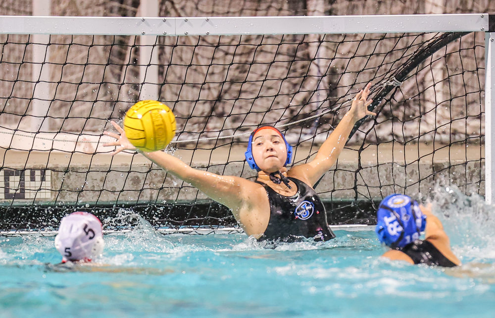

2026 rankings
Team rankings with the full story behind them.
Browse every WPI ranking by age group and gender, then open connected team profiles to see tournament records, placements, club context, and the results behind each position.
—Teams in selected group
Top 25Shown first
8Age/gender groups
2026Post-JO season
